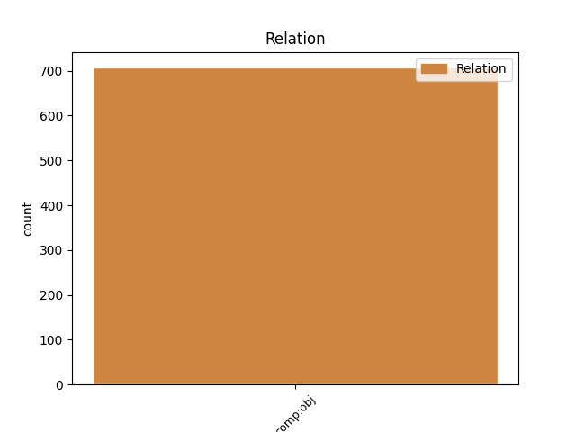
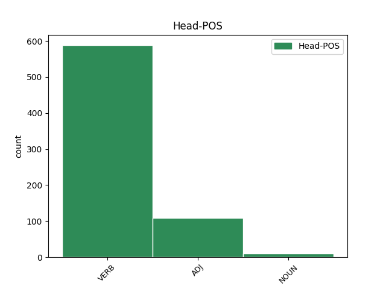
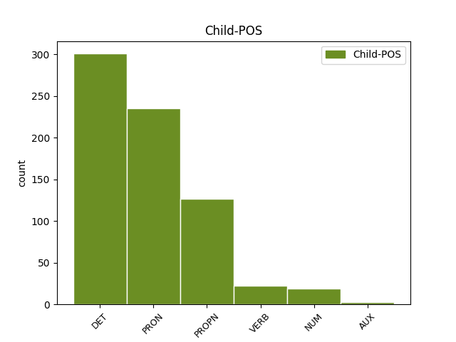

Distribution of features within this leaf



Agreement Rules sorted by frequency.
- When the dependent token is the direct object complements(comp:obj) of the head token, and the dependent token is PROPN.
1 Toto _ _ _ _ 0 _ _ _
2 je _ _ _ _ 0 _ _ _
3 podle _ _ _ _ 0 _ _ _
4 některých _ _ _ _ 0 _ _ _
5 autorů _ _ _ _ 0 _ _ _
6 typická _ _ _ _ 0 _ _ _
7 vlastnost _ _ _ _ 0 _ _ _
8 aktivních _ _ _ _ 0 _ _ _
9 jevů _ _ _ _ 0 _ _ _
10 pozorovaných _ _ _ _ 0 _ _ _
11 v _ _ _ _ 0 _ _ _
12 okolí _ _ _ _ 0 _ _ _
13 druhého _ _ _ _ 0 _ _ _
14 maxima _ _ _ _ 0 _ _ _
15 cyklu _ _ _ _ 0 _ _ _
16 prosazovaného prosazovaný ADJ AAIS2----1A---- Animacy=Inan|Case=Gen|Degree=Pos|Gender=Masc|Number=Sing|Polarity=Pos 0 _ _ _
17 Gněvyševem Gněvyšev PROPN NNMS7-----A---- Animacy=Anim|Case=Ins|Gender=Masc|NameType=Sur|Number=Sing|Polarity=Pos 16 comp:obj _ SpaceAfter=No
18 . _ _ _ _ 0 _ _ _
1 Prokázalo prokázat VERB VpNS---XR-AA--- Gender=Neut|Number=Sing|Polarity=Pos|Tense=Past|VerbForm=Part|Voice=Act 0 _ _ _
2 to ten DET PDNS4---------- Case=Acc|Gender=Neut|Number=Sing|PronType=Dem 1 comp:obj _ _
3 přesvědčivě _ _ _ _ 0 _ _ _
4 studium _ _ _ _ 0 _ _ _
5 rentgenových _ _ _ _ 0 _ _ _
6 spekter _ _ _ _ 0 _ _ _
7 , _ _ _ _ 0 _ _ _
8 které _ _ _ _ 0 _ _ _
9 * _ _ _ _ 0 _ _ _
10 fyzik _ _ _ _ 0 _ _ _
11 Moseley _ _ _ _ 0 _ _ _
12 . _ _ _ _ 0 _ _ _
1 Erben _ _ _ _ 0 _ _ _
2 , _ _ _ _ 0 _ _ _
3 a _ _ _ _ 0 _ _ _
4 nikoli _ _ _ _ 0 _ _ _
5 jen _ _ _ _ 0 _ _ _
6 v _ _ _ _ 0 _ _ _
7 tomto _ _ _ _ 0 _ _ _
8 případě _ _ _ _ 0 _ _ _
9 , _ _ _ _ 0 _ _ _
10 pominul _ _ _ _ 0 _ _ _
11 již _ _ _ _ 0 _ _ _
12 samu _ _ _ _ 0 _ _ _
13 tradiční _ _ _ _ 0 _ _ _
14 ruskou _ _ _ _ 0 _ _ _
15 úvodní _ _ _ _ 0 _ _ _
16 formuli _ _ _ _ 0 _ _ _
17 a _ _ _ _ 0 _ _ _
18 nahradil nahradit VERB VpYS---XR-AA--- Aspect=Perf|Gender=Masc|Number=Sing|Polarity=Pos|Tense=Past|VerbForm=Part|Voice=Act 0 _ _ _
19 ji _ _ _ _ 0 _ _ _
20 českým _ _ _ _ 0 _ _ _
21 byl být VERB VpYS---XR-AA--- Gender=Masc|Number=Sing|Polarity=Pos|Tense=Past|VerbForm=Part|Voice=Act 18 comp:obj _ _
22 jeden _ _ _ _ 0 _ _ _
23 cař _ _ _ _ 0 _ _ _
24 . _ _ _ _ 0 _ _ _
1 Erben _ _ _ _ 0 _ _ _
2 jej _ _ _ _ 0 _ _ _
3 mohl _ _ _ _ 0 _ _ _
4 jen _ _ _ _ 0 _ _ _
5 vyslechnout _ _ _ _ 0 _ _ _
6 a _ _ _ _ 0 _ _ _
7 nezaznačit _ _ _ _ 0 _ _ _
8 nebo _ _ _ _ 0 _ _ _
9 mohl _ _ _ _ 0 _ _ _
10 být _ _ _ _ 0 _ _ _
11 záznam _ _ _ _ 0 _ _ _
12 někomu někdo PRON PZM-3---------- Animacy=Anim|Case=Dat|Gender=Masc|PronType=Ind 13 comp:obj _ _
13 zapůjčen zapůjčený ADJ VsYS---XX-AP--- Aspect=Perf|Gender=Masc|Number=Sing|Polarity=Pos|Variant=Short|VerbForm=Part|Voice=Pass 0 _ _ _
14 a _ _ _ _ 0 _ _ _
15 ztracen _ _ _ _ 0 _ _ _
16 . _ _ _ _ 0 _ _ _
1 Vzhledem _ _ _ _ 0 _ _ _
2 ke _ _ _ _ 0 _ _ _
3 skutečnosti _ _ _ _ 0 _ _ _
4 , _ _ _ _ 0 _ _ _
5 že _ _ _ _ 0 _ _ _
6 většina _ _ _ _ 0 _ _ _
7 částic _ _ _ _ 0 _ _ _
8 v _ _ _ _ 0 _ _ _
9 energetickém _ _ _ _ 0 _ _ _
10 spektru _ _ _ _ 0 _ _ _
11 má _ _ _ _ 0 _ _ _
12 energii _ _ _ _ 0 _ _ _
13 přibližně _ _ _ _ 0 _ _ _
14 rovnu rovný ADJ ACFS4-----A---- Case=Acc|Gender=Fem|Number=Sing|Polarity=Pos|Variant=Short 0 _ _ _
15 jedné _ _ _ _ 0 _ _ _
16 třetině třetina NUM CyFS3---------- Case=Dat|Gender=Fem|Number=Sing|NumType=Frac 14 comp:obj _ _
17 maximální _ _ _ _ 0 _ _ _
18 energie _ _ _ _ 0 _ _ _
19 , _ _ _ _ 0 _ _ _
20 je _ _ _ _ 0 _ _ _
21 vhodné _ _ _ _ 0 _ _ _
22 brát _ _ _ _ 0 _ _ _
23 v _ _ _ _ 0 _ _ _
24 úvahu _ _ _ _ 0 _ _ _
25 průměrný _ _ _ _ 0 _ _ _
26 dosah _ _ _ _ 0 _ _ _
27 částic _ _ _ _ 0 _ _ _
28 . _ _ _ _ 0 _ _ _
1 Byl být AUX VpYS---XR-AA--- Gender=Masc|Number=Sing|Polarity=Pos|Tense=Past|VerbForm=Part|Voice=Act 5 comp:obj _ _
2 to _ _ _ _ 0 _ _ _
3 okamžik _ _ _ _ 0 _ _ _
4 , _ _ _ _ 0 _ _ _
5 řekl říci VERB VpYS---XR-AA--- Gender=Masc|Number=Sing|Polarity=Pos|Tense=Past|VerbForm=Part|Voice=Act 0 _ _ _
6 o _ _ _ _ 0 _ _ _
7 svém _ _ _ _ 0 _ _ _
8 pádu _ _ _ _ 0 _ _ _
9 , _ _ _ _ 0 _ _ _
10 který _ _ _ _ 0 _ _ _
11 skončil _ _ _ _ 0 _ _ _
12 naštěstí _ _ _ _ 0 _ _ _
13 jen _ _ _ _ 0 _ _ _
14 odřeninami _ _ _ _ 0 _ _ _
15 , _ _ _ _ 0 _ _ _
16 Petr _ _ _ _ 0 _ _ _
17 Matoušek _ _ _ _ 0 _ _ _
18 . _ _ _ _ 0 _ _ _
Disagree Examples:
1 Sněhových _ _ _ _ 0 _ _ _
2 řetězů _ _ _ _ 0 _ _ _
3 nesmí _ _ _ _ 0 _ _ _
4 řidič _ _ _ _ 0 _ _ _
5 motorového _ _ _ _ 0 _ _ _
6 vozidla _ _ _ _ 0 _ _ _
7 užít _ _ _ _ 0 _ _ _
8 , _ _ _ _ 0 _ _ _
9 pokud _ _ _ _ 0 _ _ _
10 vozovka _ _ _ _ 0 _ _ _
11 není _ _ _ _ 0 _ _ _
12 pokryta _ _ _ _ 0 _ _ _
13 takovou _ _ _ _ 0 _ _ _
14 sněhovou _ _ _ _ 0 _ _ _
15 vrstvou _ _ _ _ 0 _ _ _
16 , _ _ _ _ 0 _ _ _
17 aby _ _ _ _ 0 _ _ _
18 by _ _ _ _ 0 _ _ _
19 ji on PRON PPFS4--3------- Case=Acc|Gender=Fem|Number=Sing|Person=3|PronType=Prs 22 comp:obj _ _
20 sněhové _ _ _ _ 0 _ _ _
21 řetězy _ _ _ _ 0 _ _ _
22 nepoškozovaly poškozovat VERB VpTP---XR-NA--- Animacy=Inan|Aspect=Imp|Gender=Fem,Masc|Number=Plur|Polarity=Neg|Tense=Past|VerbForm=Part|Voice=Act 0 _ _ _
23 . _ _ _ _ 0 _ _ _
1 Nesplňuje _ _ _ _ 0 _ _ _
2 - _ _ _ _ 0 _ _ _
3 li _ _ _ _ 0 _ _ _
4 vozidlo _ _ _ _ 0 _ _ _
5 a _ _ _ _ 0 _ _ _
6 náklad _ _ _ _ 0 _ _ _
7 stanovené _ _ _ _ 0 _ _ _
8 podmínky _ _ _ _ 0 _ _ _
9 , _ _ _ _ 0 _ _ _
10 nesmí _ _ _ _ 0 _ _ _
11 provozovatel _ _ _ _ 0 _ _ _
12 přikázat _ _ _ _ 0 _ _ _
13 ani _ _ _ _ 0 _ _ _
14 dovolit _ _ _ _ 0 _ _ _
15 , _ _ _ _ 0 _ _ _
16 aby _ _ _ _ 0 _ _ _
17 by _ _ _ _ 0 _ _ _
18 ho on PRON PHZS4--3------- Case=Acc|Gender=Masc,Neut|Number=Sing|Person=3|PronType=Prs|Variant=Short 20 comp:obj _ _
19 bylo _ _ _ _ 0 _ _ _
20 užito užitý ADJ VsNS---XX-AP--- Gender=Neut|Number=Sing|Polarity=Pos|Variant=Short|VerbForm=Part|Voice=Pass 0 _ _ _
21 k _ _ _ _ 0 _ _ _
22 jízdě _ _ _ _ 0 _ _ _
23 . _ _ _ _ 0 _ _ _
1 Nedojde _ _ _ _ 0 _ _ _
2 - _ _ _ _ 0 _ _ _
3 li _ _ _ _ 0 _ _ _
4 mezi _ _ _ _ 0 _ _ _
5 správou _ _ _ _ 0 _ _ _
6 domu _ _ _ _ 0 _ _ _
7 a _ _ _ _ 0 _ _ _
8 občanem _ _ _ _ 0 _ _ _
9 , _ _ _ _ 0 _ _ _
10 jemuž jenž PRON PJZS3---------- Case=Dat|Gender=Masc,Neut|Number=Sing|PrepCase=Npr|PronType=Rel 13 comp:obj _ LGloss=(který_[ve_vedl.větě])
11 byl _ _ _ _ 0 _ _ _
12 byt _ _ _ _ 0 _ _ _
13 přidělen přidělený ADJ VsYS---XX-AP--- Aspect=Perf|Gender=Masc|Number=Sing|Polarity=Pos|Variant=Short|VerbForm=Part|Voice=Pass 0 _ _ _
14 , _ _ _ _ 0 _ _ _
15 k _ _ _ _ 0 _ _ _
16 dohodě _ _ _ _ 0 _ _ _
17 o _ _ _ _ 0 _ _ _
18 rozsahu _ _ _ _ 0 _ _ _
19 příslušenství _ _ _ _ 0 _ _ _
20 bytu _ _ _ _ 0 _ _ _
21 , _ _ _ _ 0 _ _ _
22 nebo _ _ _ _ 0 _ _ _
23 mezi _ _ _ _ 0 _ _ _
24 správou _ _ _ _ 0 _ _ _
25 domu _ _ _ _ 0 _ _ _
26 a _ _ _ _ 0 _ _ _
27 uživatelem _ _ _ _ 0 _ _ _
28 bytu _ _ _ _ 0 _ _ _
29 k _ _ _ _ 0 _ _ _
30 dohodě _ _ _ _ 0 _ _ _
31 o _ _ _ _ 0 _ _ _
32 výši _ _ _ _ 0 _ _ _
33 úhrady _ _ _ _ 0 _ _ _
34 za _ _ _ _ 0 _ _ _
35 užívání _ _ _ _ 0 _ _ _
36 bytu _ _ _ _ 0 _ _ _
37 a _ _ _ _ 0 _ _ _
38 za _ _ _ _ 0 _ _ _
39 služby _ _ _ _ 0 _ _ _
40 spojené _ _ _ _ 0 _ _ _
41 s _ _ _ _ 0 _ _ _
42 užíváním _ _ _ _ 0 _ _ _
43 bytu _ _ _ _ 0 _ _ _
44 , _ _ _ _ 0 _ _ _
45 rozhodne _ _ _ _ 0 _ _ _
46 o _ _ _ _ 0 _ _ _
47 tom _ _ _ _ 0 _ _ _
48 odbor _ _ _ _ 0 _ _ _
49 bytového _ _ _ _ 0 _ _ _
50 hospodářství _ _ _ _ 0 _ _ _
51 příslušného _ _ _ _ 0 _ _ _
52 obvodního _ _ _ _ 0 _ _ _
53 národního _ _ _ _ 0 _ _ _
54 výboru _ _ _ _ 0 _ _ _
55 . _ _ _ _ 0 _ _ _
1 Po _ _ _ _ 0 _ _ _
2 zániku _ _ _ _ 0 _ _ _
3 práva _ _ _ _ 0 _ _ _
4 na _ _ _ _ 0 _ _ _
5 užívání _ _ _ _ 0 _ _ _
6 bytu _ _ _ _ 0 _ _ _
7 je _ _ _ _ 0 _ _ _
8 dosavadní _ _ _ _ 0 _ _ _
9 uživatel _ _ _ _ 0 _ _ _
10 bytu _ _ _ _ 0 _ _ _
11 povinen _ _ _ _ 0 _ _ _
12 odevzdat _ _ _ _ 0 _ _ _
13 jej _ _ _ _ 0 _ _ _
14 správě _ _ _ _ 0 _ _ _
15 domu _ _ _ _ 0 _ _ _
16 ve _ _ _ _ 0 _ _ _
17 stavu _ _ _ _ 0 _ _ _
18 , _ _ _ _ 0 _ _ _
19 v _ _ _ _ 0 _ _ _
20 jakém _ _ _ _ 0 _ _ _
21 jej on PRON PPZS4--3------2 Case=Acc|Gender=Masc,Neut|Number=Sing|Person=3|PronType=Prs|Style=Arch 22 comp:obj _ _
22 převzal převzít VERB VpYS---XR-AA--- Gender=Masc|Number=Sing|Polarity=Pos|Tense=Past|VerbForm=Part|Voice=Act 0 _ _ _
23 , _ _ _ _ 0 _ _ _
24 s _ _ _ _ 0 _ _ _
25 přihlédnutím _ _ _ _ 0 _ _ _
26 k _ _ _ _ 0 _ _ _
27 normálnímu _ _ _ _ 0 _ _ _
28 opotřebení _ _ _ _ 0 _ _ _
29 . _ _ _ _ 0 _ _ _
1 Jde _ _ _ _ 0 _ _ _
2 - _ _ _ _ 0 _ _ _
3 li _ _ _ _ 0 _ _ _
4 o _ _ _ _ 0 _ _ _
5 dodávku _ _ _ _ 0 _ _ _
6 paliva _ _ _ _ 0 _ _ _
7 , _ _ _ _ 0 _ _ _
8 odstraní _ _ _ _ 0 _ _ _
9 znečištění _ _ _ _ 0 _ _ _
10 vždy _ _ _ _ 0 _ _ _
11 organizace _ _ _ _ 0 _ _ _
12 , _ _ _ _ 0 _ _ _
13 jíž jenž PRON PJFS3---------- Case=Dat|Gender=Fem|Number=Sing|PrepCase=Npr|PronType=Rel 16 comp:obj _ LGloss=(který_[ve_vedl.větě])
14 bylo _ _ _ _ 0 _ _ _
15 palivo _ _ _ _ 0 _ _ _
16 dovezeno dovezený ADJ VsNS---XX-AP--- Gender=Neut|Number=Sing|Polarity=Pos|Variant=Short|VerbForm=Part|Voice=Pass 0 _ _ _
17 . _ _ _ _ 0 _ _ _